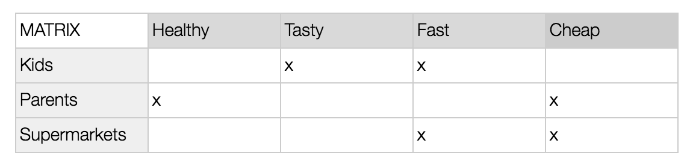

DIGITAL TOOLBOX
TO TEACH ABOUT
ARTIFICIAL INTELLIGENCE
LEARN MORE ABOUT ALGORITHMS
Content
- What are algorithms?
- How does an algorithm work?
- What is the impact of algorithms?
This part of the material is developed around three core questions: what are algorithms? How do they function? What is the impact of algorithms?
What are algorithms?
To begin talking about algorithms, this brainstorm is for students' to share their concerns, ideas, and knowledge about the subject, and for the teacher to add their inputs as well.
Common visual brainstorm
Where have you heard the word algorithm before?
What do you associate with the term?
Who uses the word?
Assignment - make a step-by-step guide
In this part, the students will write down how to make a “leverpostej” sandwich to try to make an algorithm themselves. Leverpostej” sandwich is the equivalent of a peanut butter sandwich in Denmark, just savory with meat.
"Algorithms are merely specific descriptions of step-by-step actions that need to happen to achieve a particular outcome. They are produced to solve a problem or perform a computation. Algorithms are used throughout many areas of IT (Gillis, Alexander S. 2023)."
Write down a recipe step by step of how to make the best “leverpostej” sandwich. First, write down the ingredients you need and then follow a step-by-step guide on how to make it.
When the students have finished their guide they will share it in smaller groups. Look at the directions together - how exact are they? Maybe a human could do it, but could a computer/robot do it? For example, a computer/robot might wonder some of these questions: how much bread? What should be used to spread out the meat? Where do I find the ingredients?
Finish with a plenum discussion of what is the best “leverpostej” sandwich. What does best mean? How did their ideas of the best shape the step-by-step guide differently?
Collect during the talk the different values they present like health, fast, tasty, cheap etc.
Assignment - Make a matrix
Talk with the students about the actor/stakeholders when making a sandwich like parents, kids, meat companies, supermarkets, etc. Present the students with the matrix and ask them to fill out the values and who could be stakeholders. The actors in one column and the values from the exercise earlier in another column. The idea is now they can fill out the matrix - see the example in the following.

br
How does an algorithm work?
In this part, students will get a better understanding of how algorithms are used in digital technologies after making their own.
Show the students the small introduction video to algorithms (machine learning): Supervised vs. Unsupervised Machine Learning: What's the Difference?
Let the students try a game developed by google to show them how an algorithm learns more and more and therefore becomes better as its job
If you create videos on youtube you can earn money by getting a lot of views and by having a lot of subscribers. One way to get more people to watch your video is by being shown in their video feed as relevant. The algorithms of Google and youtube are designed to give the user the most “relevant” content. How do you become relevant to the algorithm? It is not exactly known how youtube has created its algorithm.
Assignment - make a video
Make a two-minute video on your phone of a “How to make the best leverpostej sandwich”. Do it as a one-take with limited camera movement. The students should choose from what perspective they wish to create the video: is it the parent, the meat company, the kids etc.? And what values do they wish to focus on like health, taste/fun, cost etc.?
Consider these three areas before starting filming: what style do you wanna do it in, what language do you wanna use and what should your message be?
(if you wish to expand on this assignment you can incorporate talking about how to communicate to their target group like is it through pathos, logos, and ethos?)
End talk
Watch together the students' videos, and ask the students to write down who they think the video had as a targeting group and what values. Discuss how this influences our digital landscape? Who creates content on youtube? What other ways can you be shown as relevant (sponsors, commercials, etc.)? What are the main values of the company youtube?